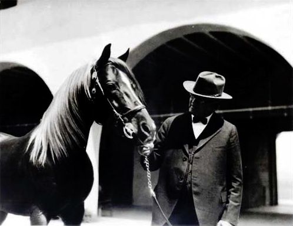

Will Keith Kellogg

W.K. Kellogg and his Arabian horse Antez at Kellogg's former Arabian horse ranch
Here is a timeline of W.K Kellogg's life
- 1860 - born in Battle Creek, Michigan
- 1897 - started Sanitas Food Company with the help of his brother
- 1906 - Will founded the Battle Creek Toasted Corn Flake Company, later becoming the Kellogg Company
- 1925 - he purchased 377 acres (1.5 km2) for $250,000 in Pomona, California, to establish an Arabian horse
ranch
- 1930 - he established the W. K. Kellogg Foundation, ultimately donating $66 million to it
- 1932 - Kellogg donated his ranch, which had grown to 750 acres (3 km²), to the University of California
- 1951 - dies at age of 91
read more